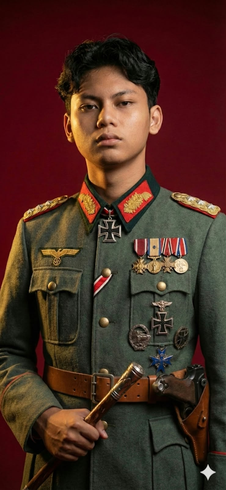

Web & Software Developer | Mahasiswa Teknik Informatika
Fokus mengembangkan sistem web dinamis, aplikasi spasial interaktif berbasis peta, serta pemeliharaan dan optimasi backend server produksi.
Full-Stack & Sistem Web
Frontend responsif dan backend modular
Pemetaan Interaktif
Integrasi Leaflet.js & data koordinat
Live System Maintenance
Bug fixing & integrasi form server PMB
Saya adalah mahasiswa semester 6 Teknik Informatika di Universitas Buana Perjuangan Karawang yang memiliki antusiasme tinggi dalam pengembangan web, perangkat lunak, dan eksplorasi di bidang Data Science serta Machine Learning.
Saya terbiasa menangani proyek dan arsitektur sistem berbasis kebutuhan nyata. Pengalaman saya membentang dari pemeliharaan sistem Penerimaan Mahasiswa Baru (PMB) UBP Karawang, merancang arsitektur web modern seperti WAREREX (menggunakan ekosistem Laravel dengan integrasi modular Vue.js) dan sistem Manajemen Barang murni berbasis Laravel, hingga pengembangan aplikasi mobile (GoRentall) dan portal GIS spasial desa.
Di luar penulisan kode dan perancangan antarmuka visual dengan Figma, saya menaruh minat mendalam pada sejarah militer, sejarah dunia, dan geopolitik, sebuah hobi yang kerap memberikan perspektif analitis yang tajam saat saya memecahkan masalah logika dalam pemrograman.
S1 Teknik Informatika
Kombinasi pengalaman teknis pemeliharaan server produksi, pengembangan web & sistem spasial, hingga aktivitas akademik.
🏛️ Universitas Buana Perjuangan Karawang
🌾 KKN Desa Wanajaya (LPPM UBP Karawang)
💻 Proyek Personal & Klien
🎓 Universitas Buana Perjuangan Karawang
Kombinasi bahasa pemrograman, framework modern, serta perangkat penunjang yang saya gunakan dalam pengembangan proyek.
Ekosistem kecerdasan buatan mutakhir yang diintegrasikan secara strategis dalam alur kerja rekayasa perangkat lunak untuk akselerasi riset arsitektur, optimasi algoritma, audit kualitas kode, dan pengembangan otonom.
Dokumentasi sertifikat pelatihan dan kompetensi yang telah saya peroleh.
Tertarik untuk berdiskusi seputar peluang proyek web, kolaborasi sistem geospasial, atau tawaran magang? Saya siap menyambut pesan Anda.